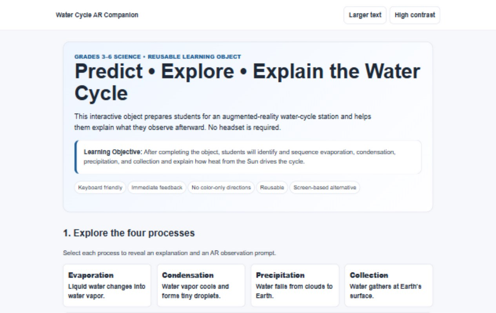
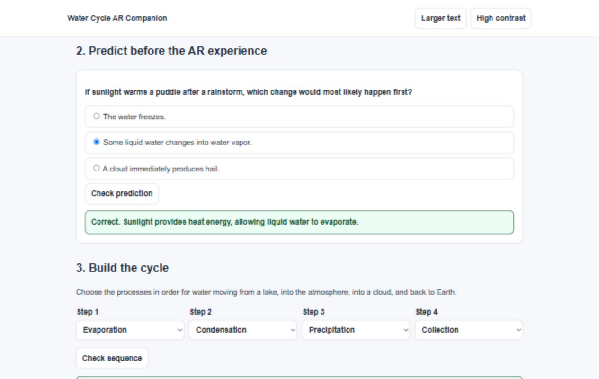

From Proposal to Practice: A Reusable Water Cycle Learning Object
An interactive learning object that prepares students for an augmented-reality water-cycle experience and helps them explain what they observed.
For my sixth blog post, I created Predict, Explore, Explain the Water Cycle, an interactive learning object designed to accompany the augmented-reality science component of my Flexible Digital Learning & Innovation Lab proposal. The object prepares students for a small-group AR water-cycle experience and gives them a structured way to explain what they observed afterward. The learning objective is for students to identify and sequence evaporation, condensation, precipitation, and collection and explain how heat from the Sun drives the water cycle.
The object begins with concise explanations of the four processes. Students then make a prediction about what happens when sunlight warms surface water, place the stages of the cycle in sequence, complete an observation mission during the AR experience, answer a short knowledge check, and finish with an explanation prompt. This structure is intentional. Dumitrica and Jarmula (2022) found that digital learning objects can support comprehension, self-regulation, and scaffolded movement from simpler to more complex knowledge when they are thoughtfully integrated into instruction. Rather than treating AR as the lesson itself, the object places the immersive experience inside a larger cycle of prediction, observation, feedback, and explanation.
I selected Lumi with H5P as the publishing tool because it is designed specifically for reusable interactive learning content. H5P supports question types, interactive modules, immediate feedback, and browser-based delivery, while Lumi allows content to be shared by link or exported as H5P, HTML, or SCORM (Lumi Education, n.d.). That flexibility matters because the same learning object could be linked from a class website, embedded in a learning management system, or reused in another course without rebuilding it from the beginning.
Accessibility was a design requirement rather than an addition at the end. Students can navigate the object with a keyboard, enlarge text, switch to a high-contrast view, and receive feedback in text rather than through color alone. The AR observation task also includes a screen-based alternative for students who cannot or prefer not to use an immersive device. Sozer et al. (2024) emphasize that effective e-learning objects should be useful, accessible, learnable, interactive, and designed around clear goals and feedback. Their work also reinforces that usability includes pedagogical and technical considerations, not simply attractive visual design.
The object is engaging because students are required to make decisions throughout the experience rather than only read information. Immediate feedback encourages revision, and the final explanation asks students to put the process into their own words. It is also reusable. A teacher could use it before an AR activity as preparation, after the activity as formative assessment, or independently with a diagram or browser-based simulation when AR technology is unavailable.




Access instructions: Open the link in any current web browser. No special headset is required. Complete the sections in order, or use the headings to move directly to a specific activity.
Open the learning object (opens in a new tab)References
- Dumitrica, D., & Jarmula, P. (2022). Teaching qualitative research methods in media and communication: The benefits and limitations of digital learning objects. The Qualitative Report, 27(9), 1934-1951. doi.org/10.46743/2160-3715/2022.5256
- Lumi Education. (n.d.). Create H5P and host your content on Lumi. lumi.education/en
- Sozer, B., Ozdamar, N., & Pilanci, H. (2024). Intercultural usability in e-learning objects prepared for teaching Turkish to foreigners. Turkish Online Journal of Distance Education, 25(3), 243-264. doi.org/10.17718/tojde.1334017